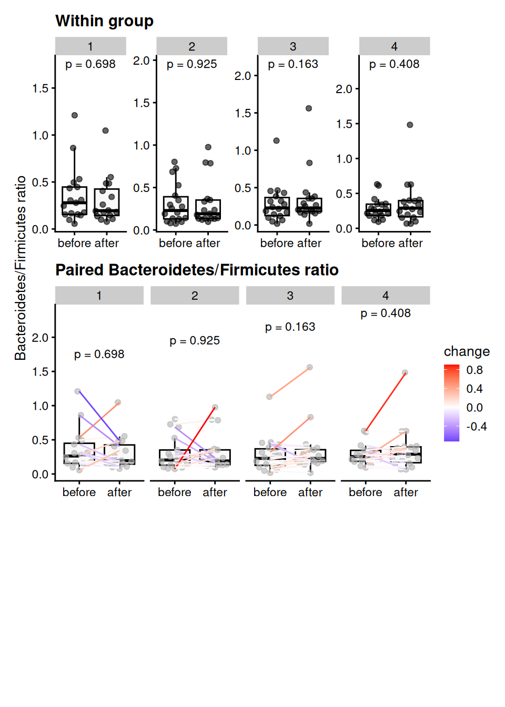

Bacteroidetes/Firmicutes ratio
1 Bacteroidetes/Firmicutes ratio
1.1 Group-wise comparisons
- Taxonomic level: Phylum
- Group variable: diet
- Multiple testing correction: fdr
- Statistical test Wilcoxon
1.1.1 Table of the top findings
1.1.2 Across-group
1.1.2.1 Before treatment
- Multiple testing correction: fdr
- Statistical test: Wilcoxon
1.1.2.2 After treatment
- Multiple testing correction: fdr
- Statistical test: Wilcoxon

1.1.3 Within-group
1.1.3.1 Paired treatment
- Multiple testing correction: paired -none
- Statistical test: Wilcoxon
2 Data Summary
class: TreeSummarizedExperiment
dim: 5 140
metadata(1): agglomerated_by_rank
assays(2): counts relabundance
rownames(5): Actinobacteria Bacteroidetes Firmicutes Other
Proteobacteria
rowData names(10): kingdom phylum ... clade_name phylum_sub
colnames(140): AE1332 AK1371 ... TS2358 VK2336
colData names(15): sample id ... group bact_firm_ratio
reducedDimNames(0):
mainExpName: NULL
altExpNames(0):
rowLinks: NULL
rowTree: NULL
colLinks: NULL
colTree: NULL